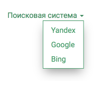

Вспомогательные объекты для верстальщика в Django
Сегодня возникла задача — реализовать возможность добавления выпадающих меню в произвольное место на сайте.
Структура веб-сайта может содержать разнообразные элементы, которые могут отображаться динамически, получая данные как из базы, так и вручную, посредством написания html/css кода в нужном месте. Например, это удобно в случае, когда в каком-то месте сайта должен стоять один или несколько произвольных блоков, параметры которых определяются из вне системы (например, заказчиком). Примерами могут служить стилизованная ссылка, ведущая на сайт клиента, текст или элементы в футере, счётчики.
Такие задачи нам помогает решать приложение django-cmstemplates, которое позволяет динамически создавать нужные блоки в определённых частях сайта, а самое главное - их можно редактировать прямо из админки, используя синтаксис шаблонов Django.
Так вот, возвращаясь к задаче — необходимо реализовать меню с выпадающим списком. Проблему эту можно решить десятком способов, но мне хотелось избавиться от дублирования одной и той же разметки в разных блоках.
Для этого я написал вот такой вспомогательный класс, описывающий выпадающее меню:
import uuid from django.template.loader import render_to_string class DropdownMenu: def __init__(self, title): self.title = title self.links = [] self.id = uuid.uuid4() def __iter__(self): return iter(self.links) def add_link(self, name, url): self.links.append({'name': name, 'url': url}) def render(self): return render_to_string('blocks/dropdown_menu.html', {'menu': self}) def __str__(self): return self.render()
Я думаю, что код здесь максимально понятный, и говорит сам за себя даже без докстрингов. DropdownMenu — всего лишь вспомогательный класс, призванный хранить состояние описываемой сущности.
Объекты класса рендерят себя, используя такой шаблон:
<div class="drop-down-menu"> <div id="{{ menu.id }}" class="drop-down-menu__link"> {{ menu.title }} <span class="caret"></span> </div> <ul class="drop-down-menu__items"> {% for link in menu %} <li> <a href="{{ link.url }}">{{ link.name }}</a> </li> {% endfor %} </ul> </div>
Выглядит это следующим образом:

Создание и изменение меню реализовано с помощью шаблонных тегов:
# coding: utf-8 from django import template from core.templatetags.dropdown import DropdownMenu register = template.Library() @register.simple_tag() def dropdown_menu(title): menu = DropdownMenu(title) return menu @register.simple_tag() def add_link(menu, name, url): menu.add_link(name, url) return ''
Для вывода меню нужно добавить в шаблон следующее:
{% raw %}
{% dropdown_menu 'Поисковая система' as menu %} {% add_link menu 'Yandex' 'http://yandex.ru' %} {% add_link menu 'Google' 'http://google.com' %} {% add_link menu 'Bing' 'http://bing.com' %} {# Вот так меню рендерится в html #} {{ menu }}
{% endraw %}
В целом получилось достаточно просто, а главное теперь удобно работать с меню из шаблонов, и автоматически мы следуем принципу DRY - Dont Repeat Yourself.
Данный пример лишь иллюстрирует возможности подхода и не ограничивается только на создании меню. Такой подход можно использовать для любых других элементов интерфейса. Хотя приведённый пример на сто процентов решает нашу задачу, реализацию можно улучшить, например, написать шаблонный тег, реализующий более удобный синтаксис:
{% raw %}
{% menu %} {% link 'Yandex' 'http://yandex.ru' %} {% link google_variable %} {% endmenu
{% endraw %}
На этом всё. Удачи!
Комментарии
Comments powered by Disqus